IDT
| Project Links |
|---|
| Software GitHub Repository https://github.com/ds2-eu/idt.git |
| Progress GitHub Project https://github.com/orgs/ds2-eu/projects/3 |
General Description
IDT is the core enabler of DS2 who purpose is to be deployed in front of participants data source/spaces and network connected to any other IDT-enabled data source. As such its aim is to run all DS2 modules, including the DS2 Connector, the core module for Inter-Dataspace communication and data transfer, and the Containerisation module for DS2 module deployment. The IDT contains the core Kubernetes runtime to run all containerised modules and a series of additional open-source software for module management.
The IDT contains the Kubernetes runtime that is the core service to run all modules in a containerised way. Those modules descriptors are uploaded to the DS2 Portal Marketplace and then, using the IDT Kubernetes UI, are deployed to the Kubernetes runtime. The Containerisation module kicks-in and then converts those module descriptors to full module charts effectively deploying the DS2 modules. The Kubernetes UI, alongside the Management and Monitoring Controller, will be used to manage and monitor all DS modules running on a participants IDT. Additional services will also be run as part of the IDT such as certificate management, ingress network traffic management using traditional ingress controllers with ingress resources to expose modules and eventually transitioning to service mesh and gateway API, storage management and possibly other useful open-source tools. The other key component of the IDT is the DS2 Connector used for Dataspace like communications following current IDSA and Gaia-X standards. An additional IDT UI will be provided for module navigation and Connector management.
Architecture
The figure below represents the module fit into the DS-DS environment. 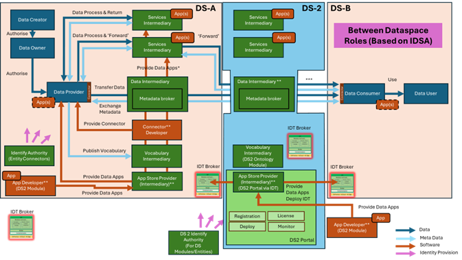
The figure below represents the actors, internal structure, primary sub-components, primary DS2 module interfaces, and primary other interfaces of the module. 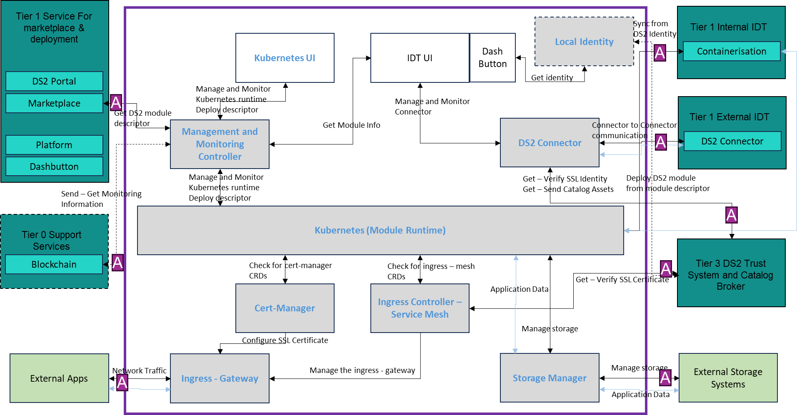
Component Definition
This module has the following subcomponent and other functions:
-
Kubernetes (Module Runtime): Kubernetes is the leading technology in container orchestration and the choice and key component of the IDT for deployment and integration of the DS2 modules. This is the core IDT subcomponent that runs and orchestrates the DS2 modules and all the other IDT subcomponents, as containers. This is Open-Source software and the current distribution being used is K3s, a lightweight version of Kubernetes easy to install, half the memory, all in a binary, in less than 100 MB among other enhancements. One of the main advantages is the flexibility of installation, since it can be deployed at a participant edge, onPremise, InCloud, etc.
-
Kubernetes UI: The Kubernetes UI is open-source software based on Rancher that allows to deploy and manage Kubernetes in a more user-friendly way both onPremise and InCloud. The Kubernetes UI will provide the management interface for platform administrators and the module deployment interface for participants running the IDT. This interface will be used to deploy the module ChartDescriptors, configuration files that describe how a module runs on Kubernetes, from the DS2 Portal Marketplace in the IDT. The Containerisation module will then transform the descriptors into full Helm Charts and deploy them to the Kubernetes subcomponent. The Kubernetes UI will also provide the monitoring interface to the IDT Kubernetes subcomponent and the DS2 modules.
-
Management and Monitoring Controller: This is the main interface from the Kubernetes UI to the Kubernetes subcomponent and also for external integrations. The Management and Monitoring Controller is open-source software based on the Kubernetes and Rancher API and the Rancher agents. It is used as the primary interface to the IDT Kubernetes subcomponent for management and deployment of modules. It will also be used as the primary interface for monitoring which will potentially be integrated with the DRM Blockchain module for traceability. In addition, further research on using other modules for monitoring such as Prometheus-Grafana will be conducted for enhanced monitoring.
-
Ingress – Gateway: The ingress or gateway resource provides the entry point to the IDT Kubernetes subcomponent via the Ingress controller, thus, the IDT network, for all network traffic from external apps, being an external app, any system external to the IDT. It describes how the DS2 modules are exposed outside of the IDT. Initially the modules will use a Kubernetes Ingress resource to expose the modules but further research will be conducted to examine the use of the Gateway API and Service Mesh technology.
-
Ingress Controller – Service Mesh: Based on Open Source, the Ingress Controller is the Kubernetes controller dealing with Ingress resources, that is, managing the entry point to the IDT and how the DS2 modules are exposed outside of IDT. Further research is expected for replacement of the Ingress Controller with Service Mesh technology and the Kubernetes Gateway API, that adds a transparent layer to provide the IDT with enhanced connectivity, security, control and observability. The use of the Service Mesh could also be a key feature for using more secure communication via mutual TLS protocol (mTLS) in all DS2 communications which provides and additional trust layer. This could also be integrated with the DS2 trust and identity system.
-
Storage Manager: Open-source software to provide the interface between the IDT Kubernetes subcomponent and the physical storage for DS2 stateful modules. This will use Kubernetes native storage technology to allow highly available stateful module deployments in IDT. When data from DS2 modules need to be persisted in a participant backend storage system, the Storage Manager will be used to map current deployment and Kubernetes Persistent Volumes to external storage systems. This is not a storage system or technology for modules… If DS2 modules need to use storage, the DS2 modules need to provide them by packaging them in their module Chart.
-
CertManager: Based on Open-source software, it provides management of SSL certificates for secure connectivity ie. HTTPS, with verified signed certificates using Let’s Encrypt CertificateAuthority (CA) and configures them for the Ingress or Gateway resource. The CertManager integrates with the Ingress Controller and/or Service Mesh subcomponents and in addition, further research on integration with DS2 Trust system will be explored.
-
DS2 Connector: The DS2 Connector in the IDT is the key element that will allow for DS2 transactions and data exchange, following the IDSA and Gaia-X standards. The Open-source Eclipse EDC Connector (or the Tractus-X extension) will be used to provide interoperability between Dataspaces and secure, trustworthy exchange of data. Following existing Dataspace principles and protocols, the DS2 Connector will use the DS2 Trust system for identity management and will connect to other participants IDT DS2 Connectors in other Dataspaces for data exchange. The Connector will also integrate with the DS2 Catalog or a Dataspace level Metadata Broker for participant and data discovery.
-
Local Identity: This module is optional and it provides local identity, authentication and authorization to access a participant IDT and its modules by the various users types within a company. Based on Open Source Keycloak identity provider software, further research will be done in order to explore the possibility of linking the Local Identity with the DS2 Trust system.
-
Tier 0 Support Service Stack:
- DRM and API: For further exploration integration of the monitoring controller with the Blockchain will be considered.
-
Tier 1 Service Stack for Marketplace and deployment and API: The full stack will be implemented as generically described elsewhere in this document. Exceptions: The IDT uses the DS2 Portal and Marketplace to retrieve the ChartDescriptors of modules and deploy them via the Kubernetes UI. Then the Containerisation module uses the descriptors to deploy the full module Helm Chart. In addition, The DS2 Connector in the IDT integrates with other IDT DS2 Connectors for data exchange.
-
Tier 3 Trust Stack and Catalog and API: The IDT will make use of the relevant parts of the DS2 Trust Stack for certificates in the Ingress Controller – Service Mesh and identities in the DS2 Connector. The IDT will also connect via the DS2 Connector to the Catalog.
-
External Apps: External Apps refer to any software application external to the IDT and DS2 ecosystem that uses the DS2 Connector in the IDT for any DS2 data transaction. It’s the application that can trigger a data exchange via the Connector, either as a consumer or producer.
-
External Storage Systems: This refers to any external storage system, physical or software defined, that a participant has already in place and where data from the IDT and DS2 ecosystem can be persisted, thus, is mapped via the Storage Manager into the IDT Kubernetes
Screenshots
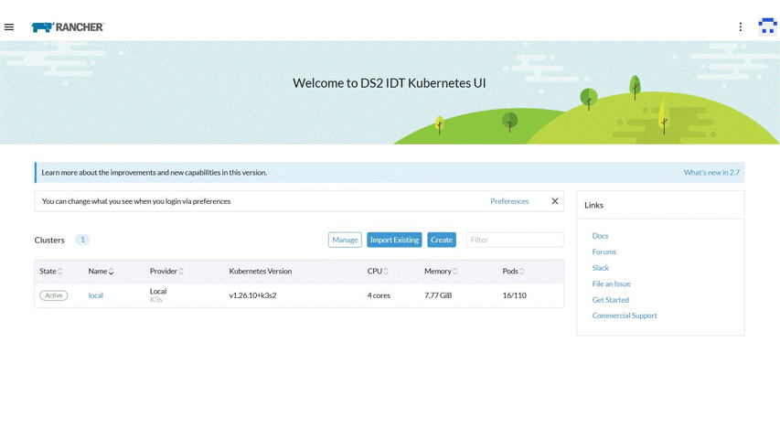
Commercial Information
| Organisation (s) | License Nature | License |
|---|---|---|
| ICE | Open Source | Apache 2.0 |
Top Features
- Kubernetes Platform: The IDT provides a Kubernetes based platform for ease of integration and deployment of the modules
- Flexible Installation Process: The IDT provides a user friendly installation process for easy installation to non-experienced users. In any case, management of the platform itself, will require some expertise. In addition, it supports different installation modes from on-cloud to on-prem and edge.
- Management Interface: A Rancher based UI is provided for the Kubernetes cluster management. Management of Kubernetes itself will require some expertise. The Management UI provides the interface and API for module management : deployment, deletion, upgrade
- Monitoring of Platfom and Apps: Provides the interface and API to monitor the cluster itself and the modules
- Seamless Integration with Containerisation Deployment: IDT integrates seamlessly with the Containerisation module for ease of module deployment
- Networking: Provides secure networking and connectivity among the installed apps and to and from outside the cluster
- Log management: Ability to retrieve module logs for troubleshooting and debugging
- Native Storage: Provides Kubernetes native storage for stateful applications
- IDT Portal: Provides a local version of the DS2 Portal as the entry point to the IDT, single sign on and module navigation
- DS2 Connector: The IDT incorporates the DS2 Connector for DS2 data exchange
How To Install
The IDT installs a pre-packaged enterprise ready Kubernetes cluster along with some extra features for management and deployment.
Requirements
Provision a Linux VM (Ubuntu 18.04 or 20.04) Resources:
Kubernetes Node
- Minimum: 2 cpu cores, 4 GB RAM and 10 GB disk capacity.
- Recommended: 4 cpu cores, 8 GB RAM and 50 GB disk capacity.
These numbers may change since a number of IDT components will be deployed, check specific requirements for specific components.
Software
IDT installs these software utilities and specific tested compatible versions:
- Docker
- K3s (Kubernetes)
- Helm
- Cert-manager
- Rancher
- Creates a self signed certificate to use by the ingress controller
- Nginx Ingress Controller
- Nginx docker (load balancer - optional)
- DS2 Connector (to do)
- Core DS2 modules (to do)
Summary of installation steps
- Clone the repo
- Deploy IDT
- Run the command mini-idt.sh nodeip iface as per instructions. This deploys the Kubernetes platform
- nodeip: the ip of the node
- iface: the network interface of the node ip
- Access Rancher at https://rancher.$nodeip.ds2.sslip.io where $nodeip uses '-' instead of '.' (The domain can be changed if needed)
- Register the catalog(s)
- If http access is needed, run patch_nginx.sh
- Deploy IDT modules from the Rancher UI (Using Containerisation module at a later stage)
- Any script required before deploying any component should be in the idt/modules folder
- Upon deployment of first module import the self-signed certificate in the trusted CA's store
Detailed steps
-
Clone the repository
-
Navigate to idt folder
-
Run idt
where ip is the ip of the vm where k3s will be installed and iface is the network interface of the nodeip for instance ./idt.sh 192.168.50.5 enp0s8
The script will install the software utilities in this order:
-
First, IDT installs Docker
-
Then, k3s Kubernetes cluster is installed. Once installed, the installation process will wait and check for K3s to be up and running. Helm is installed together with K3s and kubectl.
-
Next cert-manager is deployed in order to provide a ssl certificate for Rancher. Process will wait and check that cert-manager is running.
-
Then Rancher is deployed in the cluster. Process will wait and check that Rancher is running.
-
Next, the nginx ingress controller is deployed. Before this, a self signed ssl certificate is created using certmanager. Notice that the domain that is configured in the certificate, is the one to be used as domain for the modules when deployed to IDT which defaults to *.$nodeip.modules.ds2.sslip.io . This domain can be changed.
-
DS2 IDT is now ready.
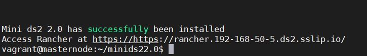
- Access Rancher by accessing the Rancher url in the browser (https://rancher.$nodeip.ds2.sslip.io)
- Once in the Rancher UI, the admin password is set
- Then navigate to the workloads in the system project
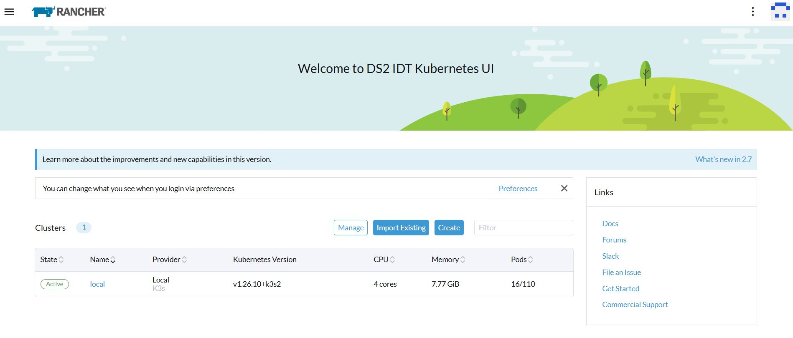
-
The nginx ingress controller is by default set to only accept https connections and redirect to https. In order to use http, run the script patch_nginx.sh which will configure nginx ingress controller to accept http (optional).
-
Now that the cluster is up and running, the Rancher UI can be accessed in order to manage the cluster and install modules.
How To Use
Once the IDT has been installed, the Rancher UI along with the IDT Portal (local Portal) and the core modules (to be done) can be accessed.
Rancher UI
The Rancher UI is the main entry point for Kubernetes cluster management and configuration.
-
Inspect the cluster and check number of nodes, resources, etc 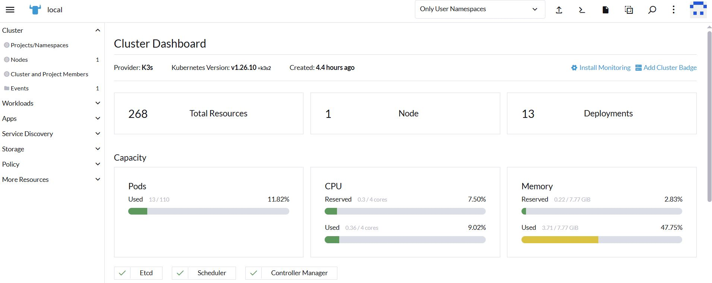
-
Create a Module Repository: A user can register a module catalog or repository in order to be able to deploy modules from that module repository. A catalog is just a repository, git or helm, where helm charts are stored. In general, users won't need to create any new repository in the IDT since a default DS2 catalog will be created for the organisation pulling from the organisation repository in DS2 intermediary platform. If needed, in order to create a new repository, navigate to the cluster, apps, repositories, and click on the "Add Catalog" button. Fill in the form with the credentials for a private repository and click "Create". The Repository is added to Rancher and the modules will be displayed in the Apps view 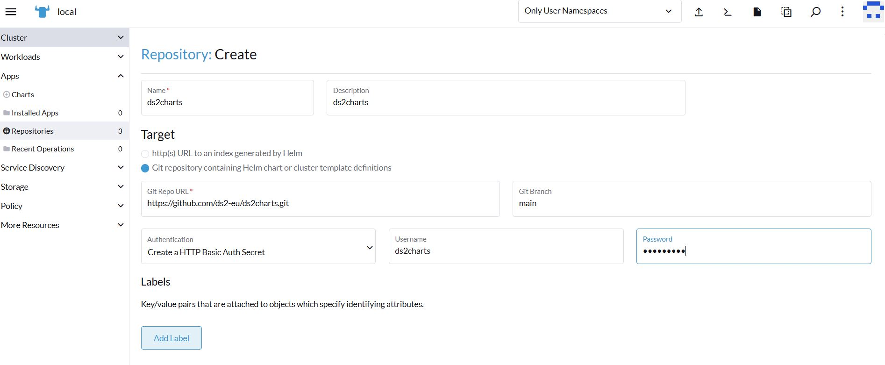
-
Module Deployment: modules can be deployed from the registered Repository, but in general this will be done via the Containerisation module. If needed, navigate to Apps, Charts and the list of available charts (apps) is displayed. Select the chart to be deployed, click on Install, select the Namespace and Name for the instance of the chart and select whether to customize the Helm options before install. If customization is selected, fill in the configuration form and or yaml. Click Next then click Install. The application will be deployed to the platform. 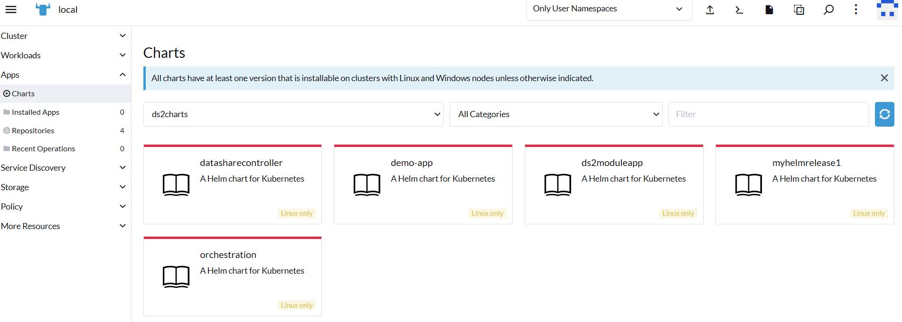
-
Module logs: In order to review the modules logs, navigate to Apps, Installed Apps, and the list of installed modules is displayed. Select the module to be monitored and the list of Kubernees resources of that module are displayed. Select the Deployment and the Pod is displayed. Click on the three dots on the right and select View Logs. The logs of the module are displayed. 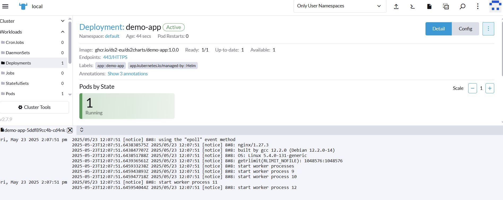
-
Module deletion: modules can be deleted by navigating to Apps, Installed apps and clicking on the three dots on the right and click on Delete. In general, this will be done via the Containerisation module 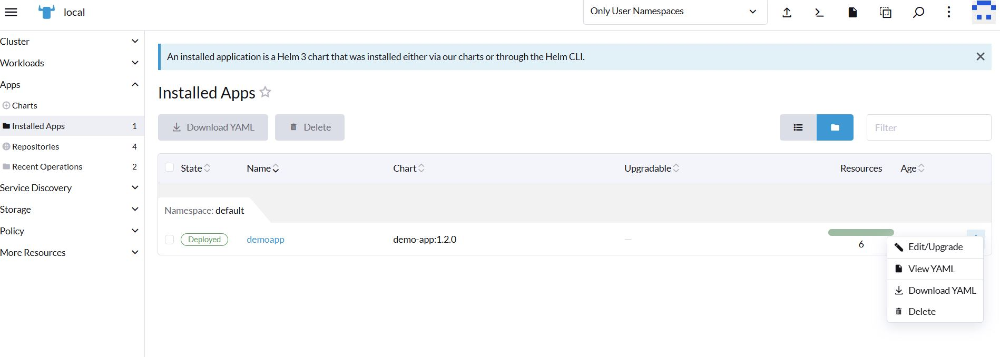
IDT Portal
To Be Done
Connector UI
To Be Done
Other Information
No other information at the moment for IDT
OpenAPI Specification
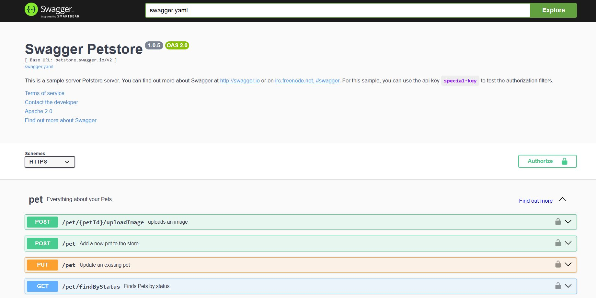
Additional Links
Video https://youtube.com/idt
Kubernetes https://v1-26.docs.kubernetes.io/docs/home/
Helm https://helm.sh/
K3s https://k3s.io/
Rancher https://ranchermanager.docs.rancher.com/v2.7/getting-started/quick-start-guides
EDC Connector https://eclipse-edc.github.io/
Portal Repository https://github.com/ds2-eu/portal (Private Link for Project Members)